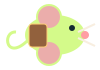

Move with WASD / arrows. Press R or Space to record, then again to release. A stationary recording works: stand inside a cyan ring, record for a second, release. Only echoes power relays. A route loops for 32+ seconds.
Courier contract
01 / Wheel Core
Your past self is your partner.
Integrity
♥ ♥ ♥ ♥
Echo energy 100%
+5.0 / second
Game SQK ◆
0
Score
00000
SETTLEMENT SURGE
TWO ECHO SLOTS / READY
STORY EXPEDITION
Record. Replay. Reclaim the ledger.
THE AUDITOR GENERAL 2 ECHOES → BREAK ARMOR
Small paws.
Parallel lives.
An echo-replay adventure beneath Squeektoshi’s wheel. Record your route, coordinate your past selves, and reclaim the burrow.
Move with WASD or the touch pad. R records and releases.
PERSONAL BEST / 00000
One living heartbeat
01
02
03

Courier / 0x01
Record → Replay → Reclaim
Built by 0xRicher
Courier on break.
Your run is paused. Live telemetry continues; settlement events wait for your return.
Your echoes do the work.
You start with TWO echo slots. Regular relays latch. Paired seals must each hold a different echo at the same time for 2 seconds. The General needs both seals held repeatedly to break three armor plates. Record a short echo on each seal.
Power all relays, collect amber memory vaults, then reach the green uplink. Collect game SQK fragments to buy eight upgrade branches. These are fictional points, not real SQK. Every fifth sector is a boss encounter.
Shift dashes; E uses a purge charge to stun nearby threats. Echoes distract Auditors, stun Fork Rats, ground Wraiths and lure Gas Leeches. Collect repair, battery, shield, overclock and purge items. Mobile: movement pad and action buttons.
Live ACTIVE state and RPM boost energy regeneration. Confirmed new settlements cause 12-second Surges: bonus SQK drops, energy refill, enemy stun and longer echoes. Settled height seeds optional Shared Block maps; projected height is never called settled.
Cumulative real wheel distance unlocks codex chapters and improves your lore-recovery score bonus. Sepolia settlement links appear below. Network failure switches to a clearly labeled SIMULATED feed; no wallet, keys or transactions are needed.
P / Esc: pause · M: sound · C: codex. Recording costs 6 energy upfront + 6 per second; max 10 seconds. Touch movement and keyboard actions work together. Shared Block is a local challenge, not a multiplayer leaderboard.
Proof of a small life.
Lore is fictional; protocol notes describe public data. Progress is saved on this device. Real distance unlocks are never awarded from simulation.
Build a better echo.
Every step leaves proof.
WASD Move R Record / release Shift Dash E Purge
2 ECHO SLOTS · 2 PURGES
Move
Ledger feed CONNECTING
Confirmed work powers tactical surgesWaiting for Squeekchain's public Sepolia ledger…
Reading /v1/settlements. No wallet required.
Explore Squeekchain Genesis ↗